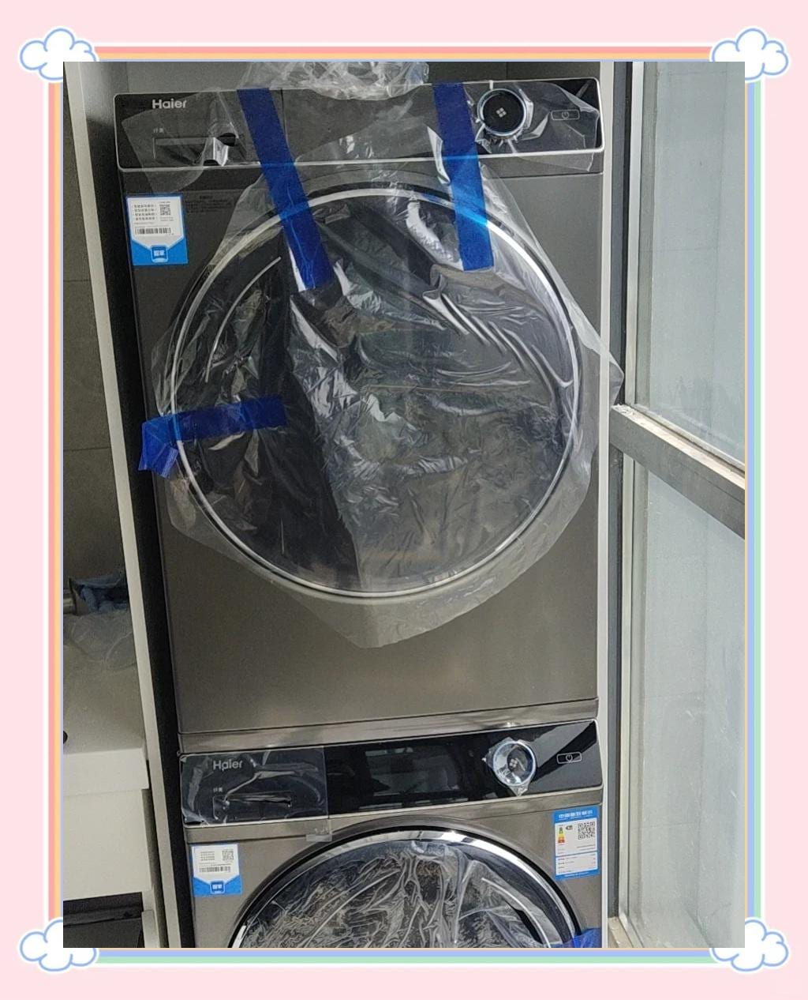

海尔纤美 176 洗烘套装

海尔纤美系列经典洗烘套装，10kg 洗衣机搭配 10kg 热泵烘干机，FPA 直驱电机安静稳定，双擎热泵正反转防缠绕。洗烘分开各司其职，衣物蓬松损伤小，是追求洗护品质家庭的一步到位之选。
客观评测
纤美 176 由约 10kg 洗衣机与约 10kg 热泵烘干机组成，洗衣机采用 FPA 直驱变频电机，最高转速约 1400rpm。实测洗涤噪音控制出色，脱水震动小；热泵烘干低温护衣，正反转设计减少大件缠绕，烘干后毛巾与衬衫蓬松度明显优于冷凝式洗烘一体机。蒸汽除菌程序对贴身衣物友好，App 可远程预约与监控洗烘进度，整体完成度在万元内套装中表现突出。
主观点评
洗烘分开之后才知道差别有多大：烘完的毛巾是蓬松的，衬衫几乎不用熨，梅雨天也不再看老天爷脸色。两台机器叠放很有仪式感，阳台瞬间变成家政中心。它占地不小、价格不低，安装也费了些心思；但对被回南天和阴雨折磨过的家庭来说，这套设备买的是每天都能穿到干爽衣物的自由，幸福感非常具体。
优点与不足
- 热泵低温烘干蓬松柔软，羊毛与羽绒也能安心烘
- 直驱电机安静平稳，夜间洗衣不扰人
- 10+10kg 大容量，四件套与窗帘一次处理
- 两台机器占地较大，阳台或洗衣间需提前规划
- 近万元预算门槛高，安装需预留上下水与散热空间
参数规格
| 类型 | 洗烘套装（洗衣机 + 热泵烘干机） |
|---|---|
| 洗涤容量 | 约 10 kg |
| 烘干容量 | 约 10 kg |
| 电机 | FPA 直驱变频电机 |
| 转速 | 约 1400 rpm |
| 能效 | 一级能效 |
| 洗烘方式 | 热泵式低温烘干，衣物损伤更小 |
| 烘干特色 | 双擎热泵，1:1 正反转减少缠绕（约） |
| 除菌 | 蒸汽除菌 / 高温除菌程序 |
| 智能 | App 远程控制，洗烘程序联动 |
| 噪音 | 洗涤约 50 dB(A)（约） |
| 内筒 | 不锈钢枕型内筒 |
| 尺寸 | 洗衣机约 595 × 550 × 850 mm（约） |